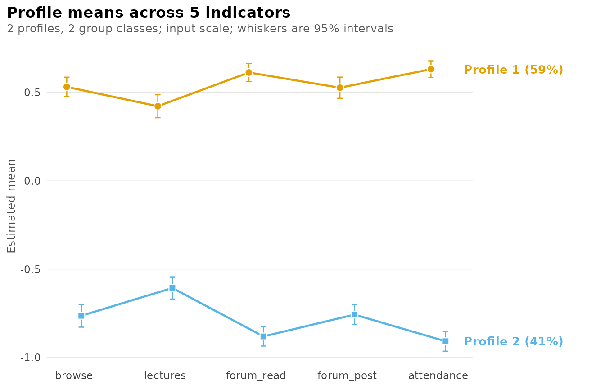
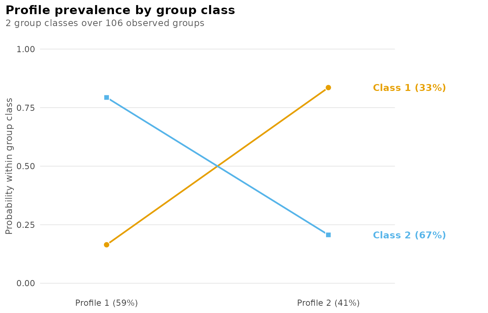

Multilevel latent profile analysis
Mohammed Saqr
University of Eastern FinlandSonsoles López-Pernas
University of Eastern FinlandSource:
vignettes/lpa.Rmd
lpa.RmdLatent profile analysis (LPA) is a person-centred statistical approach used to identify unobserved subpopulations within a heterogeneous population. It assumes that the observed data arise from a finite mixture of latent profiles, each characterized by a distinct pattern of means across a set of continuous indicators. Rather than assuming that all observations originate from a single homogeneous population, LPA allows individuals to differ in their underlying response patterns and estimates the number and characteristics of the latent profiles, their relative proportions, and the posterior probability of each observation belonging to each profile. From a statistical perspective, LPA is a finite Gaussian mixture model in which the observed distribution is represented as a weighted combination of profile-specific multivariate normal distributions (Scrucca et al., 2024).
Conventional LPA assumes that observations are independent of one another. This assumption may be inappropriate when the data have a hierarchical structure, in which observations are nested within higher-level units. For example, courses completed by the same students or employees belonging to the same departments may exhibit similarities arising from their shared context. Such dependencies may also result in differences in the distribution of latent profiles across groups. Multilevel latent profile analysis extends the conventional model by accounting for heterogeneity at both the individual and group levels (Vermunt, 2003; Asparouhov & Muthén, 2008; Mäkikangas et al., 2018).
In multilevel LPA, individuals are classified into latent profiles based on their patterns across the observed indicators, while groups are classified into latent group classes according to the distribution of individual-level profiles within them. Consequently, the model captures not only differences between individuals but also systematic differences in the composition of groups. For example, two groups may contain individuals belonging to the same set of latent profiles but differ in the relative proportions of individuals assigned to each profile. These differences are represented through group-specific profile probabilities.
Formally, let denote the latent profile membership of observation in group , and let denote the latent group class of group . The composition of each group class is described by the conditional profile probabilities:
Here, represents the probability that an observation belongs to individual-level profile , conditional on its group belonging to group class . These probabilities therefore characterize the distribution of individual-level profiles within each group class. Groups assigned to different group classes may consequently differ in their profile composition, even when the underlying individual-level profiles are identical.
An important feature of this specification is that the profile-specific means and variances are assumed to remain invariant across group classes. In other words, the individual-level profiles retain the same measurement characteristics regardless of the group class in which they occur. Differences between group classes are therefore expressed through the relative prevalence of individual-level profiles rather than through changes in the profiles’ underlying definitions. This constraint provides a common measurement structure for comparing group classes and facilitates the interpretation of differences in their profile compositions.
Houle et al. (2026) provide an overview of multilevel latent profile
analysis and its extensions, including alternative specifications that
allow additional sources of heterogeneity at the individual and group
levels. In the latents package, the function
multilpa() estimates the multilevel latent profile model
using maximum likelihood estimation and the expectation-maximization
(EM) algorithm (Dempster et al., 1977). The algorithm alternates between
estimating posterior probabilities of latent class membership and
updating the model parameters until convergence is reached.
The analysis below proceeds in the usual order: the extent of nesting, a first model, a check of its assumptions, the numbers of profiles and group classes, interpretation and evaluation of the chosen model, and the relation of its classes to another variable.
Data
course_engagement contains 1,422 course enrolments of
106 students.
-
Group:
student. -
Indicators: five activity measures
(
browse,lectures,forum_read,forum_post,attendance), standardized within course (0 is the course mean, 1 one standard deviation above it). -
External variable:
previous_grade, the standardized grade of the preceding course.
Two further columns hold the generating structure,
engagement for each enrolment and student_type
for each student; they serve only to check recovery.
Clustering within groups
descriptives() summarizes the indicators and their
intraclass correlation (icc), the share of variance between
groups, estimated from the one-way analysis of variance (Shrout &
Fleiss, 1979).
descriptives(course_engagement, vars = vars, id = "student")
#> variable n n_missing mean sd min max n_distinct n_groups sd_within sd_between
#> 1 browse 1422 0 -2.81e-05 0.989 -3.14 2.49 398 106 0.890 0.502
#> 2 lectures 1422 0 -4.22e-05 0.989 -2.91 3.22 399 106 0.945 0.392
#> 3 forum_read 1422 0 7.03e-05 0.989 -2.73 2.81 400 106 0.872 0.524
#> 4 forum_post 1422 0 -2.11e-05 0.989 -2.61 3.10 397 106 0.912 0.458
#> 5 attendance 1422 0 7.74e-05 0.989 -2.45 2.41 401 106 0.873 0.525
#> icc
#> 1 0.1923
#> 2 0.0878
#> 3 0.2240
#> 4 0.1503
#> 5 0.2215Between 9% (lectures) and 22% (forum_read,
attendance) of the variance lies between students.
Enrolments of one student are therefore not independent, and the
students are the independent units of the analysis. Most of the variance
remains within students, where the profiles operate.
A first model
n_profiles and n_group_classes set the
numbers of profiles and group classes; n_starts sets the
number of EM starts, seed makes them reproducible and
cores runs them in parallel. The default covariance
structure is "VVI" (Celeux & Govaert, 1995):
profile-specific variances and no covariances within profiles, so the
indicators are independent given the profile.
fit <- multilpa(course_engagement, vars = vars, id = "student",
n_profiles = 2, n_group_classes = 2, n_starts = 10, seed = 1)
fit
#> Two-level latent profile analysis: 2 profiles, 2 group classes
#> 1422 individuals in 106 groups; varying diagonal residual covariance (VVI)
#> Log likelihood: -8439.816424 | AIC: 16925.633 | BIC (groups): 16986.892
#> Converged: TRUE | iterations: 9 | best log likelihood reached by 10 of 10 starts (10 converged)
#> Smallest standardized Gaussian eigenvalue: 0.3715 (profiles, profile_2); Gaussian mass: 587.9; weight effective n: 606.
#>
#> Class sizes profile_1 58.7% (834) profile_2 41.3% (588)
#> Group classes group_class_1 32.5% (34) group_class_2 67.5% (72)
#>
#> Means
#> indicator profile_1 profile_2
#> browse 0.540 -0.766
#> lectures 0.427 -0.606
#> forum_read 0.620 -0.879
#> forum_post 0.530 -0.753
#> attendance 0.649 -0.921
#>
#> Variances and standard errors: get_results(x, "profiles").
#> Every other table: get_results(x, what = ), or get_results(x, "all").Profile 1 (58.7% of the enrolments) lies 0.43 to 0.65 standard deviations above the course mean on all indicators and profile 2 (41.3%) 0.61 to 0.92 below it: engaged and disengaged enrolments. The BIC uses the 106 students as its sample size. All ten starts reached the same log likelihood.
Checking local independence
Under a diagonal structure, any association between indicators within
a profile can only be represented by additional profiles, which then
describe the association rather than types of observations. The
"residuals" table compares each within-profile association
with the value the model implies, with p-values adjusted by the
Benjamini-Hochberg procedure (Benjamini & Hochberg, 1995).
head(get_results(fit, "residuals"), 6)
#> profile indicator_1 indicator_2 kind observed expected residual effective_n statistic df
#> 1 profile_1 lectures attendance gaussian 0.234 0 0.234 834 6.87 NA
#> 2 profile_2 forum_read attendance gaussian 0.229 0 0.229 588 5.63 NA
#> 3 profile_1 forum_read attendance gaussian 0.209 0 0.209 834 6.11 NA
#> 4 profile_1 forum_post attendance gaussian 0.203 0 0.203 834 5.94 NA
#> 5 profile_2 browse attendance gaussian 0.192 0 0.192 588 4.71 NA
#> 6 profile_1 browse attendance gaussian 0.173 0 0.173 834 5.04 NA
#> p_value p_adjusted
#> 1 6.37e-12 1.27e-10
#> 2 1.80e-08 8.99e-08
#> 3 1.00e-09 1.00e-08
#> 4 2.87e-09 1.91e-08
#> 5 2.43e-06 8.10e-06
#> 6 4.62e-07 1.85e-06The six largest residuals all involve attendance, in
both profiles: its within-profile correlations with the other measures
are 0.17 to 0.23, with adjusted p-values below 0.00001. The data
documentation confirms the source: attendance is generated from the four
click measures (?course_engagement).
covariance_model = "full" estimates all within-profile
covariances ("VVV"); local_dependence frees
selected pairs.
full <- multilpa(course_engagement, vars = vars, id = "student",
n_profiles = 2, n_group_classes = 2,
covariance_model = "full", n_starts = 10, seed = 1)
compare_models(diagonal = fit, full = full)
#> Model comparison
#>
#> Model Profiles Group classes k LogLik BIC ΔBIC Weight ICL Entropy Min AvePP < 0.8 Group entropy Group min AvePP
#> -------- -------- ------------- -- -------- -------- ------ ------ -------- ------- --------- ----- ------------- ---------------
#> diagonal 2 2 23 -8439.82 16986.89 160.14 0.000 17175.69 0.94 0.98 0 0.94 0.97
#> full 2 2 43 -8313.11 16826.75 0.00 1.000 17128.35 0.91 0.97 0 0.94 0.97The full structure adds 20 parameters and lowers the BIC by 160 (BIC weight 1.000). The profiles and group classes retain their sizes and meaning; the numbers of classes are chosen under this structure.
Choosing the numbers of profiles and group classes
enumerate_classes() fits every combination of the
requested numbers of profiles and group classes and returns information
criteria, classification statistics and estimation checks. For the group
classes, Lukočienė et al. (2010) recommend the BIC (Schwarz, 1978) with
the number of groups as sample size (bic_groups). Group
classes require at least two profiles, so candidates with one profile
and several group classes fail by design.
grid <- enumerate_classes(course_engagement, vars = vars, id = "student",
covariance_model = "full", n_profiles = 1:3,
n_group_classes = 1:4, n_starts = 5, seed = 1)
#> Warning: Profile 2: 18.6 Gaussian membership mass for 20 free means and variances. This is a
#> conservative diagnostic, not an identification test; inspect the Gaussian covariance diagnostics.
#> Warning: Profile 2: 17.2 Gaussian membership mass for 20 free means and variances. This is a
#> conservative diagnostic, not an identification test; inspect the Gaussian covariance diagnostics.
#> 2 of 9 candidates reached their best log likelihood from one start only (profiles3_groups2, profiles3_groups4); refit those you consider with more starts.
grid
#> Class enumeration: 12 candidate models (LPA)
#> candidate n_profiles n_group_classes model log_likelihood n_parameters aic bic_groups
#> profiles1_groups1 1 1 VVV -8710 20 17460 17514
#> profiles2_groups1 2 1 VVV -8490 41 17061 17170
#> profiles3_groups1 3 1 VVV -8472 62 17067 17232
#> profiles1_groups2 1 2 <NA> NA NA NA NA
#> profiles2_groups2 2 2 VVV -8313 43 16712 16827
#> profiles3_groups2 3 2 VVV -8289 65 16708 16881
#> profiles1_groups3 1 3 <NA> NA NA NA NA
#> profiles2_groups3 2 3 VVV -8295 45 16681 16801
#> profiles3_groups3 3 3 VVV -8275 68 16686 16867
#> profiles1_groups4 1 4 <NA> NA NA NA NA
#> profiles2_groups4 2 4 VVV -8289 47 16672 16798
#> profiles3_groups4 3 4 VVV -8262 71 16666 16855
#> bic_individual icl_individual profile_entropy group_entropy avepp_min avepp_max avepp_mean
#> 17565 17565 NA NA NA NA NA
#> 17277 17524 0.875 NA 0.959 0.971 0.965
#> 17393 18030 0.796 NA 0.665 0.956 0.833
#> NA NA NA NA NA NA NA
#> 16938 17128 0.906 0.942 0.973 0.978 0.976
#> 17050 17264 0.933 0.943 0.796 0.976 0.915
#> NA NA NA NA NA NA NA
#> 16917 17132 0.909 0.816 0.974 0.978 0.976
#> 17044 17614 0.828 0.824 0.650 0.973 0.841
#> NA NA NA NA NA NA NA
#> 16920 17142 0.912 0.797 0.977 0.978 0.977
#> 17040 17276 0.940 0.801 0.830 0.979 0.928
#> avepp_below group_avepp_min group_avepp_max group_avepp_mean group_avepp_below converged boundary
#> NA NA NA NA NA TRUE FALSE
#> 0 NA NA NA NA TRUE FALSE
#> 1 NA NA NA NA TRUE FALSE
#> NA NA NA NA NA FALSE NA
#> 0 0.971 0.993 0.982 0 TRUE FALSE
#> 1 0.979 0.990 0.985 0 TRUE FALSE
#> NA NA NA NA NA FALSE NA
#> 0 0.903 0.960 0.923 0 TRUE FALSE
#> 1 0.878 0.955 0.920 0 TRUE FALSE
#> NA NA NA NA NA FALSE NA
#> 0 0.830 0.925 0.874 0 TRUE FALSE
#> 0 0.851 0.910 0.879 0 TRUE FALSE
#> n_best_replicated
#> 5
#> 5
#> 4
#> NA
#> 5
#> 1
#> NA
#> 5
#> 4
#> NA
#> 5
#> 1
#> Every column, unrounded: as.data.frame(x).
#> 3 candidate(s) failed to fit; the `error` column of as.data.frame(x) gives the reason.
#> No candidate is selected automatically. Compare one convention consistently.get_deltas() gives the improvement of each criterion
when a profile or a group class is added.
subset(get_deltas(grid), criterion == "bic_groups")
#> candidate n_profiles n_group_classes model criterion value delta_profile
#> 1 profiles1_groups1 1 1 VVV bic_groups 17514 NA
#> 2 profiles2_groups1 2 1 VVV bic_groups 17170 343.1
#> 3 profiles3_groups1 3 1 VVV bic_groups 17232 -61.7
#> 4 profiles1_groups2 1 2 <NA> bic_groups NA NA
#> 5 profiles2_groups2 2 2 VVV bic_groups 16827 NA
#> 6 profiles3_groups2 3 2 VVV bic_groups 16881 -54.5
#> 7 profiles1_groups3 1 3 <NA> bic_groups NA NA
#> 8 profiles2_groups3 2 3 VVV bic_groups 16801 NA
#> 9 profiles3_groups3 3 3 VVV bic_groups 16867 -66.6
#> 10 profiles1_groups4 1 4 <NA> bic_groups NA NA
#> 11 profiles2_groups4 2 4 VVV bic_groups 16798 NA
#> 12 profiles3_groups4 3 4 VVV bic_groups 16855 -57.6
#> from_profile delta_group_class from_group_class
#> 1 <NA> NA <NA>
#> 2 profiles1_groups1 NA <NA>
#> 3 profiles2_groups1 NA <NA>
#> 4 <NA> NA <NA>
#> 5 <NA> 343.67 profiles2_groups1
#> 6 profiles2_groups2 350.88 profiles3_groups1
#> 7 <NA> NA <NA>
#> 8 <NA> 26.13 profiles2_groups2
#> 9 profiles2_groups3 13.99 profiles3_groups2
#> 10 <NA> NA <NA>
#> 11 <NA> 3.06 profiles2_groups3
#> 12 profiles2_groups4 12.06 profiles3_groups3Two profiles are supported unambiguously: the second profile lowers
the BIC by 343, and a third raises it at every number of group classes,
by 55 to 67. For the group classes, the second lowers the BIC by 344,
the third by 26 and the fourth by 3, while group-level separation
declines (relative entropy 0.942, 0.816 and 0.797; lowest group average
posterior 0.971, 0.903 and 0.830). The AWE (Banfield & Raftery,
1993) and the ICL computed on the enrolments (Biernacki et al., 2000),
which penalize uncertain classification, select two group classes
(get_best(grid)). The model with two profiles and two group
classes is retained. The small gains of further group classes have an
identifiable source: engagement changes along each student’s course
sequence, a dependence that multilevel LPA does not model and that
additional group classes partly absorb; lta() models the
sequence directly (see the latent
transition analysis article).
Two candidates with three profiles (two and four group classes) raise warnings: one profile has too little membership for its 20 free means and covariances, and both reached their best likelihood from a single start. The AIC, whose penalty is the weakest, favours three profiles with four group classes; the BIC rejects three profiles at every number of group classes, so the warnings do not affect the choice by BIC.
The chosen model
full
#> Two-level latent profile analysis: 2 profiles, 2 group classes
#> 1422 individuals in 106 groups; varying full residual covariance (VVV)
#> Log likelihood: -8313.111554 | AIC: 16712.223 | BIC (groups): 16826.751
#> Converged: TRUE | iterations: 12 | best log likelihood reached by 10 of 10 starts (10 converged)
#> Smallest standardized Gaussian eigenvalue: 0.271 (profiles, profile_2); Gaussian mass: 583.2; weight effective n: 610.5.
#>
#> Class sizes profile_1 59.0% (839) profile_2 41.0% (583)
#> Group classes group_class_1 32.5% (34) group_class_2 67.5% (72)
#>
#> Means
#> indicator profile_1 profile_2
#> browse 0.531 -0.764
#> lectures 0.422 -0.607
#> forum_read 0.613 -0.881
#> forum_post 0.527 -0.758
#> attendance 0.632 -0.908
#>
#> Variances and standard errors: get_results(x, "profiles").
#> Every other table: get_results(x, what = ), or get_results(x, "all").Profile 1 (59.0%) lies 0.42 to 0.63 standard deviations above the
course mean and profile 2 (41.0%) 0.61 to 0.91 below it; attendance and
forum reading separate the profiles most, lecture viewing least.
get_results() returns the means and variances,
get_results(full, "covariances") the covariances.
get_results(full)
#> profile indicator mean variance standard_deviation mean_standard_error
#> 1 1 browse 0.531 0.601 0.775 0.0280
#> 2 1 lectures 0.422 0.846 0.920 0.0331
#> 3 1 forum_read 0.613 0.492 0.702 0.0259
#> 4 1 forum_post 0.527 0.694 0.833 0.0306
#> 5 1 attendance 0.632 0.409 0.639 0.0240
#> 6 2 browse -0.764 0.529 0.727 0.0328
#> 7 2 lectures -0.607 0.541 0.736 0.0320
#> 8 2 forum_read -0.881 0.359 0.599 0.0276
#> 9 2 forum_post -0.758 0.412 0.642 0.0286
#> 10 2 attendance -0.908 0.396 0.629 0.0287
#> variance_standard_error
#> 1 0.0308
#> 2 0.0426
#> 3 0.0258
#> 4 0.0360
#> 5 0.0221
#> 6 0.0338
#> 7 0.0331
#> 8 0.0237
#> 9 0.0267
#> 10 0.0253All variances are below 1, the variance of the standardized indicators: enrolments within a profile are more homogeneous than the sample. The profile plot shows the means, with the profile shares in the labels.
plot_profiles(full)
Group classes
The "profile_probabilities" table gives
(probability) and the proportion of groups in each class
(group_class_probability).
get_results(full, "profile_probabilities")
#> group_class profile probability group_class_probability
#> 1 1 1 0.164 0.325
#> 2 1 2 0.836 0.325
#> 3 2 1 0.793 0.675
#> 4 2 2 0.207 0.675Group class 2 (67.5% of the students) has 79.3% engaged enrolments and group class 1 (32.5%) 16.4%: mostly engaged and mostly disengaged students. Neither class is pure: a mostly engaged student is disengaged in about one course in five, a mostly disengaged student engaged in about one in six. Students are mixtures of profiles in class-specific proportions. The prevalence plot shows these probabilities.
plot_prevalence(full)
Class sizes and classification
effective_count sums the posterior probabilities and is
therefore not necessarily an integer.
get_results(full, "counts")
#> level class effective_count effective_proportion
#> 1 individuals 1 838.8 0.590
#> 2 individuals 2 583.2 0.410
#> 3 groups 1 34.5 0.325
#> 4 groups 2 71.5 0.675The profiles hold 838.8 and 583.2 enrolments, the group classes 34.5 and 71.5 students; no class is small enough to threaten estimation. Relative entropy measures the separation of the classes on a scale from 0 (no separation) to 1 (certain assignment) (Ramaswamy et al., 1993); it is not a measure of fit.
get_results(full, "entropy")
#> level n_classes n_units entropy_sum relative_entropy
#> 1 individuals 2 1422 92.36 0.906
#> 2 groups 2 106 4.25 0.942Relative entropy is 0.906 for the enrolments and 0.942 for the students. The average posterior probability of the assigned class gives the same information by class.
get_results(full, "average_posteriors")
#> level assigned_class class n_assigned average_posterior
#> 1 individuals 1 1 842 0.97775
#> 2 individuals 1 2 842 0.02225
#> 3 individuals 2 1 580 0.02674
#> 4 individuals 2 2 580 0.97326
#> 5 groups 1 1 35 0.97087
#> 6 groups 1 2 35 0.02913
#> 7 groups 2 1 71 0.00698
#> 8 groups 2 2 71 0.99302The average posteriors are 0.978 and 0.973 for the profiles and 0.971
and 0.993 for the group classes. Assignments are therefore accurate at
both levels, although analyses of assigned classes still ignore the
remaining uncertainty; the three-step methods below account for it. The
"assignments" table adds the most probable
profile and group_class, the
uncertainty of the profile assignment and the posterior
probabilities to the data.
get_results(full, "assignments", data = course_engagement) |> head()
#> student course sequence browse lectures forum_read forum_post attendance previous_grade
#> 1 1 23 1 0.73 -0.08 0.30 0.67 0.72 0.54
#> 2 1 19 2 0.68 0.53 -0.02 -0.55 0.70 -0.71
#> 3 1 4 3 -1.51 -0.51 -0.91 -0.80 -0.97 1.98
#> 4 1 18 4 0.64 -1.02 -1.62 -1.20 -1.26 -1.42
#> 5 1 16 5 -0.94 -0.37 -0.71 -0.28 -1.52 -0.67
#> 6 1 29 6 -0.36 -0.46 -0.77 -0.43 -1.34 -0.40
#> engagement student_type profile group_class uncertainty posterior_profile_1 posterior_profile_2
#> 1 engaged wavering 1 1 0.010237 0.989763 0.0102
#> 2 engaged wavering 1 1 0.147719 0.852281 0.1477
#> 3 disengaged wavering 2 1 0.000061 0.000061 0.9999
#> 4 disengaged wavering 2 1 0.000193 0.000193 0.9998
#> 5 disengaged wavering 2 1 0.000224 0.000224 0.9998
#> 6 disengaged wavering 2 1 0.000563 0.000563 0.9994The first student’s first two enrolments are assigned to the engaged profile, the second with an uncertainty of 0.148, and the next four to the disengaged profile with uncertainties below 0.001; the student belongs to the mostly disengaged group class.
Recovery of the known structure
The truth argument cross-tabulates the assignments with
the generating labels; class numbers are arbitrary, so correspondence is
read from the table.
get_results(full, "assignments", data = course_engagement,
truth = c("engagement", "student_type"))
#> assignment class truth value n proportion
#> 1 profile 1 engagement disengaged 18 0.0308
#> 2 profile 2 engagement disengaged 567 0.9692
#> 3 profile 1 engagement engaged 824 0.9845
#> 4 profile 2 engagement engaged 13 0.0155
#> 5 group_class 1 student_type committed 1 0.0161
#> 6 group_class 2 student_type committed 61 0.9839
#> 7 group_class 1 student_type wavering 34 0.7727
#> 8 group_class 2 student_type wavering 10 0.2273Profile 1 contains 824 of the 837 engaged enrolments and profile 2 567 of the 585 disengaged ones (98% and 97%). Group class 2 contains 61 of the 62 committed students but also 10 of the 44 wavering ones. The model classifies the students with high certainty (relative entropy 0.942), yet recovers the wavering students less well: group classes differ only in their proportions of profiles, so a wavering student whose enrolments happen to be mostly engaged resembles a committed one.
Uncertainty of the estimates
parameter_inference() returns each estimate with its
standard error and 95% Wald interval, from the observed information by
default; vcov_type = "robust" gives sandwich standard
errors with the students as clusters. The first ten rows are the profile
means.
inference <- parameter_inference(full)
head(inference, 10)
#> level outcome term parameter estimate standard_error statistic p_value
#> 1 measurement profile_1 browse mean 0.531 0.0280 18.9 4.52e-80
#> 2 measurement profile_1 lectures mean 0.422 0.0331 12.8 3.07e-37
#> 3 measurement profile_1 forum_read mean 0.613 0.0259 23.6 1.38e-123
#> 4 measurement profile_1 forum_post mean 0.527 0.0306 17.2 1.87e-66
#> 5 measurement profile_1 attendance mean 0.632 0.0240 26.3 4.39e-152
#> 6 measurement profile_2 browse mean -0.764 0.0328 -23.3 6.90e-120
#> 7 measurement profile_2 lectures mean -0.607 0.0320 -19.0 3.96e-80
#> 8 measurement profile_2 forum_read mean -0.881 0.0276 -31.9 5.69e-223
#> 9 measurement profile_2 forum_post mean -0.758 0.0286 -26.5 5.45e-155
#> 10 measurement profile_2 attendance mean -0.908 0.0287 -31.7 5.51e-220
#> p_adjusted conf_low conf_high
#> 1 4.52e-80 0.476 0.586
#> 2 3.07e-37 0.357 0.487
#> 3 1.38e-123 0.562 0.664
#> 4 1.87e-66 0.467 0.587
#> 5 4.39e-152 0.585 0.679
#> 6 6.90e-120 -0.829 -0.700
#> 7 3.96e-80 -0.670 -0.544
#> 8 5.69e-223 -0.935 -0.827
#> 9 5.45e-155 -0.814 -0.702
#> 10 5.51e-220 -0.964 -0.852The standard errors of the means are 0.024 to 0.033, and the intervals of the two profiles are far apart. The last six rows contain the group-level probabilities.
tail(inference, 6)
#> level outcome term parameter estimate standard_error statistic p_value
#> 41 profile profile_1 group_class_1 probability 0.164 0.0224 NA NA
#> 42 profile profile_2 group_class_1 probability 0.836 0.0224 NA NA
#> 43 profile profile_1 group_class_2 probability 0.793 0.0161 NA NA
#> 44 profile profile_2 group_class_2 probability 0.207 0.0161 NA NA
#> 45 group group_class_1 <NA> probability 0.325 0.0475 NA NA
#> 46 group group_class_2 <NA> probability 0.675 0.0475 NA NA
#> p_adjusted conf_low conf_high
#> 41 NA 0.125 0.213
#> 42 NA 0.787 0.875
#> 43 NA 0.760 0.823
#> 44 NA 0.177 0.240
#> 45 NA 0.240 0.424
#> 46 NA 0.576 0.760The group level is estimated less precisely. The share of mostly disengaged students is 0.325 (95% interval 0.240 to 0.424); the probability of an engaged enrolment is 0.164 (0.125 to 0.213) in that class and 0.793 (0.760 to 0.823) in the other.
Stability across seeds
sensitivity() refits the model from several seeds and
compares the maxima and classifications.
sensitivity(full, seeds = 1:5)
#> seed log_likelihood converged iterations optimum best agreement
#> 1 1 -8313 TRUE 12 1 TRUE 1
#> 2 2 -8313 TRUE 12 1 TRUE 1
#> 3 3 -8313 TRUE 12 1 TRUE 1
#> 4 4 -8313 TRUE 12 1 TRUE 1
#> 5 5 -8313 TRUE 12 1 TRUE 1All five refits reach the log likelihood of -8313 with identical
classifications (agreement of 1).
Relating the classes to other variables
Entering an external variable in the model can change the classes it
is meant to explain. Three-step methods hold the classes fixed and
correct for classification error (Bolck et al., 2004; Vermunt, 2010).
r3step() regresses profile membership on predictors, with
the last profile, here the disengaged one, as reference.
r3step(full, data = course_engagement, covariates = "previous_grade")
#> level outcome term estimate standard_error statistic p_value p_adjusted
#> 1 individuals profile_1 (Intercept) 0.394 0.1362 2.89 3.80e-03 NA
#> 2 individuals profile_1 previous_grade 0.615 0.0612 10.05 9.55e-24 9.55e-24
#> conf_low conf_high
#> 1 0.127 0.661
#> 2 0.495 0.735A previous grade one standard deviation higher increases the log odds
of an engaged enrolment by 0.615 (95% interval 0.495 to 0.735), an odds
ratio of about 1.85. three_step() compares the mean of a
variable across profiles.
three_step(full, data = course_engagement, outcome = "previous_grade",
contrast = "pairs")
#> Distal outcome: class differences (bch, 95% CI)
#>
#> Class vs Difference 95% CI p p (BH)
#> ----- -- ---------- -------------- ----- ------
#> 2 1 -0.57 [-0.67, -0.47] <.001 <.001Previous grades are 0.57 standard deviations lower before disengaged
than before engaged enrolments (95% interval 0.47 to 0.67). Both results
are associations; temporal order alone does not establish an effect of
grades on engagement. One-step alternatives enter predictors in the
model (profile_covariates for observations,
group_covariates for groups); fit_staged()
holds the profiles fixed while the group classes are estimated. The covariates
and case
study articles compare these approaches.
Sampling weights
weights names a column of sampling weights, constant
within the independent unit (here student). Estimation
maximizes a weighted pseudo-log-likelihood, with weights normalized to
sum to the number of students, and reports Kish’s (1965) effective
sample size. The example doubles the weight of the simulated wavering
students, as for a design that sampled them at half the rate, and uses
the diagonal structure of the first model.
weighted_data <- transform(course_engagement,
survey_weight = ifelse(student_type == "wavering", 2, 1))
weighted_fit <- multilpa(weighted_data, vars = vars, id = "student",
n_profiles = 2, n_group_classes = 2,
weights = "survey_weight", n_starts = 10, seed = 1)
weighted_fit
#> Two-level latent profile analysis: 2 profiles, 2 group classes
#> 1422 individuals in 106 groups; varying diagonal residual covariance (VVI)
#> Sampling weights `survey_weight` (pseudo maximum likelihood): Kish effective n 94.5 of 106 units
#> Log likelihood: -8341.125778 | AIC: 16728.252 | BIC (groups): 16789.511
#> Converged: TRUE | iterations: 9 | best log likelihood reached by 10 of 10 starts (10 converged)
#> Smallest standardized Gaussian eigenvalue: 0.3759 (profiles, profile_2); Gaussian mass: 714.8; weight effective n: 563.8.
#>
#> Class sizes profile_1 49.5% (701) profile_2 50.5% (715)
#> Group classes group_class_1 45.2% (48) group_class_2 54.8% (58)
#>
#> Means
#> indicator profile_1 profile_2
#> browse 0.525 -0.770
#> lectures 0.446 -0.608
#> forum_read 0.605 -0.877
#> forum_post 0.515 -0.742
#> attendance 0.655 -0.921
#>
#> Variances and standard errors: get_results(x, "profiles").
#> Every other table: get_results(x, what = ), or get_results(x, "all").Weighting changes the prevalence of the classes, not their definition: the mostly disengaged group class grows from 32.5% to 45.2% of the students and the engaged profile shrinks from 58.7% to 49.5% of the enrolments, while the profile means barely change (browsing in the engaged profile 0.525 against 0.540). The effective sample size is 94.5 of 106 students.
For weighted fits, parameter_inference() uses sandwich
standard errors by default; vcov_type = "observed" is not
available, because inverse-information standard errors do not represent
the sampling variance under unequal weights.
head(parameter_inference(weighted_fit), 4)
#> level outcome term parameter estimate standard_error statistic p_value p_adjusted
#> 1 measurement profile_1 browse mean 0.525 0.0324 16.2 6.16e-59 6.16e-59
#> 2 measurement profile_1 lectures mean 0.446 0.0367 12.2 4.54e-34 4.54e-34
#> 3 measurement profile_1 forum_read mean 0.605 0.0264 22.9 8.01e-116 8.01e-116
#> 4 measurement profile_1 forum_post mean 0.515 0.0319 16.2 9.48e-59 9.48e-59
#> conf_low conf_high
#> 1 0.462 0.589
#> 2 0.374 0.518
#> 3 0.553 0.657
#> 4 0.453 0.578weights is also available in lta(),
mixture_regression() and the other model families of
multilpa(). The parametric bootstrap likelihood ratio test
does not accept weighted fits, because its simulations do not reproduce
a sampling design.
Other options of multilpa()
-
Covariance structures.
modeltakes the fourteen mclust codes ("EII"to"VVV");volume,shapeandorientationset the components separately;local_dependencefrees selected pairs. -
Missing values.
missing = "fiml"uses all observed indicators of incomplete rows. -
Indicator types.
categorical,ordinalandcountcombine categorical, ordinal and count indicators with continuous ones (see the latent class analysis vignette). -
Model families.
familyfits group-class models from raw ratings ("additive","dispersion","additive_dispersion","restricted_cross_level","full_cross_level"; see the group-class and cross-level article). -
Order of observations.
timeorders each group’s observations for the sequence tables andplot_sequences();lta()models transitions between profiles. -
Centring.
centering = "person"subtracts each group’s mean, so that profiles describe deviations from a group’s usual level and group classes describe patterns of change;"grand"subtracts the sample mean.
Other tables, plots and functions
The calls below list the other tables, functions and views available for a fitted model. Each comment states what the call returns.
# Tables: get_results(full, what)
get_results(full, "all") # every table, as a named list
get_results(full, "covariances") # within-profile residual covariances
get_results(full, "posteriors") # one row per observation and profile
get_results(full, "posteriors", format = "wide") # one row per observation
get_results(full, "group_posteriors") # one row per group and group class
get_results(full, "classification") # class sizes and average posteriors
get_results(full, "average_posteriors") # mean posterior by assigned class
get_results(full, "classification_errors") # P(assigned class | true class)
get_results(full, "bch_weights") # weights for three-step analysis
get_results(full, "residuals") # residual correlations within profiles
get_results(full, "information_criteria") # AIC, BIC and the other criteria
get_results(full, "model") # one row describing the fit
get_results(full, "data") # the variables used in the fit
as.data.frame(full) # the profile table
# Summaries and diagnostics
descriptives(full) # indicator summaries with the ICC
descriptives(full, by = "profile") # the same, by assigned profile
diagnostics(full) # every classification diagnostic
report(full) # summary, diagnostics and plots together
# Inference and likelihood
parameter_inference(full) # standard errors and Wald intervals
confint(full) # confidence intervals
vcov(full) # covariance matrix of the estimates
logLik(full) # log likelihood
AIC(full) # Akaike information criterion
BIC(full) # BIC with the number of groups
nobs(full) # number of groups
# Plots: the plot_ functions, each with what = and "all"
plot_views() # every view and what it shows
plot_profiles(full, what = "bars") # profile means with 95% intervals
plot_profiles(full, what = "heatmap") # means in standard deviations
plot_profiles(full, what = "all") # every profile view
plot_diagnostics(full, what = "sizes") # effective size of each profile
plot_diagnostics(full, what = "entropy") # per-case classification uncertainty
plot_diagnostics(full, what = "posteriors") # posterior of each assigned profile
plot_diagnostics(full, what = "avepp") # average posteriors, assigned by posterior class
plot(full, what = "all") # every view this fit supports
# Other functions
sensitivity(full, seeds = 1:10) # refits under several seedsThe class
enumeration article covers enumerate_classes() and
get_candidate(); the latent
transition analysis article covers lta(),
get_tna() and get_group_tna(). The evaluation
article on the package website
covers bootstrap_lrt(), and the covariates article covers
three_step(), r3step() and
fit_staged().
All tables
summary() collects the result tables; rows
limits the rows printed per table.
print(summary(full), rows = 3)
#> Two-level latent profile analysis: 2 profiles, 2 group classes
#> Individuals: 1422; groups: 106; parameters: 43; converged: TRUE
#> Log likelihood: -8313.111554; AIC: 16712.223
#> BIC (groups): 16826.751; BIC (individuals): 16938.395
#> Best likelihood replicated in 10/10 starts (absolute tolerance 0.00711).
#>
#> -- profiles --------------------------------------------------------
#> profile indicator mean variance standard_deviation mean_standard_error variance_standard_error
#> 1 browse 0.5313 0.6012 0.7754 0.02804 0.03084
#> 1 lectures 0.4221 0.8459 0.9197 0.03310 0.04256
#> 1 forum_read 0.6128 0.4921 0.7015 0.02592 0.02578
#> ... 7 more rows. get_results(x, what = "profiles")
#>
#> -- responses -------------------------------------------------------
#> (no rows)
#>
#> -- covariances -----------------------------------------------------
#> profile indicator indicator_2 covariance
#> 1 browse browse 0.601215
#> 1 lectures browse 0.001435
#> 1 forum_read browse 0.026721
#> ... 47 more rows. get_results(x, what = "covariances")
#>
#> -- gaussian_diagnostics --------------------------------------------
#> context profile gaussian_mass positive_rows weight_effective_n min_variance_ratio
#> profiles profile_1 838.8 1422 865.7 0.4184
#> profiles profile_2 583.2 1422 610.5 0.3675
#> min_standardized_eigenvalue boundary
#> 0.2767 FALSE
#> 0.2710 FALSE
#>
#> -- profile_probabilities -------------------------------------------
#> group_class profile probability group_class_probability
#> 1 1 0.1644 0.3252
#> 1 2 0.8356 0.3252
#> 2 1 0.7934 0.6748
#> ... 1 more rows. get_results(x, what = "profile_probabilities")
#>
#> -- counts ----------------------------------------------------------
#> level class effective_count effective_proportion
#> individuals 1 838.78 0.5899
#> individuals 2 583.22 0.4101
#> groups 1 34.48 0.3252
#> ... 1 more rows. get_results(x, what = "counts")
#>
#> -- posteriors ------------------------------------------------------
#> row group profile posterior modal
#> 1 1 1 9.898e-01 TRUE
#> 2 1 1 8.523e-01 TRUE
#> 3 1 1 6.103e-05 FALSE
#> ... 2841 more rows. get_results(x, what = "posteriors")
#>
#> -- group_posteriors ------------------------------------------------
#> group group_size log_likelihood group_class posterior modal
#> 1 13 -61.99 1 1.000e+00 TRUE
#> 2 13 -70.35 1 1.000e+00 TRUE
#> 3 14 -77.34 1 1.699e-09 FALSE
#> ... 209 more rows. get_results(x, what = "group_posteriors")
#>
#> -- assignments -----------------------------------------------------
#> student browse lectures forum_read forum_post attendance profile group_class uncertainty
#> 1 0.73 -0.08 0.30 0.67 0.72 1 1 1.024e-02
#> 1 0.68 0.53 -0.02 -0.55 0.70 1 1 1.477e-01
#> 1 -1.51 -0.51 -0.91 -0.80 -0.97 2 1 6.103e-05
#> posterior_profile_1 posterior_profile_2
#> 9.898e-01 0.01024
#> 8.523e-01 0.14772
#> 6.103e-05 0.99994
#> ... 1419 more rows. get_results(x, what = "assignments")
#>
#> -- classification --------------------------------------------------
#> level class n_modal proportion_modal estimated_n estimated_proportion average_posterior
#> individuals 1 842 0.5921 838.78 0.5899 0.9778
#> individuals 2 580 0.4079 583.22 0.4101 0.9733
#> groups 1 35 0.3302 34.48 0.3252 0.9709
#> odds_correct_classification
#> 30.56
#> 52.34
#> 69.15
#> ... 1 more rows. get_results(x, what = "classification")
#>
#> -- average_posteriors ----------------------------------------------
#> level assigned_class class n_assigned average_posterior
#> individuals 1 1 842 0.97775
#> individuals 1 2 842 0.02225
#> individuals 2 1 580 0.02674
#> ... 5 more rows. get_results(x, what = "average_posteriors")
#>
#> -- classification_errors -------------------------------------------
#> level true_class assigned_class probability
#> individuals 1 1 0.98151
#> individuals 1 2 0.01849
#> individuals 2 1 0.03212
#> ... 5 more rows. get_results(x, what = "classification_errors")
#>
#> -- bch_weights -----------------------------------------------------
#> level unit assigned_class class weight
#> individuals 1 1 1 1.01948
#> individuals 1 1 2 -0.01948
#> individuals 2 1 1 1.01948
#> ... 3053 more rows. get_results(x, what = "bch_weights")
#>
#> -- entropy ---------------------------------------------------------
#> level n_classes n_units entropy_sum relative_entropy
#> individuals 2 1422 92.36 0.9063
#> groups 2 106 4.25 0.9422
#>
#> -- replication -----------------------------------------------------
#> n_starts n_screened n_converged n_failed n_best_replicated share tolerance best_start
#> 10 0 10 0 10 1 0.00711 1
#> log_likelihood
#> -8313
#>
#> -- residuals -------------------------------------------------------
#> profile indicator_1 indicator_2 kind observed expected residual effective_n statistic df
#> profile_2 forum_post attendance gaussian 0.124466 0.124466 2.296e-08 583.2 5.617e-07 NA
#> profile_2 browse forum_post gaussian 0.006572 0.006572 1.549e-08 583.2 3.732e-07 NA
#> profile_2 browse attendance gaussian 0.218610 0.218610 1.254e-08 583.2 3.173e-07 NA
#> p_value p_adjusted
#> 1 1
#> 1 1
#> 1 1
#> ... 17 more rows. get_results(x, what = "residuals")
#>
#> -- information_criteria --------------------------------------------
#> log_likelihood n_parameters aic kic bic_groups bic_individual sabic_groups sabic_individual
#> -8313 43 16712 16758 16827 16938 16691 16802
#> caic_groups caic_individual awe_groups awe_individual icl_groups icl_individual clc_groups
#> 16870 16981 17346 17570 17017 17128 16816
#> clc_individual
#> 16816
#>
#> -- model -----------------------------------------------------------
#> n_observations n_informative n_groups n_profiles n_group_classes centering scaling
#> 1422 1422 106 2 2 none none
#> covariance_structure n_parameters n_parameters_with_measurement log_likelihood aic bic_groups
#> VVV 43 43 -8313 16712 16827
#> bic_individual converged iterations boundary small_classes best_start n_best_replicated weights
#> 16938 TRUE 12 FALSE FALSE 1 10 <NA>
#>
#> -- stages ----------------------------------------------------------
#> stage group_classes fixed log_likelihood parameters parameters_with_measurement converged
#> joint 2 <NA> -8313 43 43 TRUE
#>
#> -- starts ----------------------------------------------------------
#> start log_likelihood converged iterations error boundary
#> 1 -8313 TRUE 12 <NA> FALSE
#> 2 -8313 TRUE 15 <NA> FALSE
#> 3 -8313 TRUE 12 <NA> FALSE
#> ... 7 more rows. get_results(x, what = "starts")
#>
#> -- data ------------------------------------------------------------
#> student browse lectures forum_read forum_post attendance
#> 1 0.73 -0.08 0.30 0.67 0.72
#> 1 0.68 0.53 -0.02 -0.55 0.70
#> 1 -1.51 -0.51 -0.91 -0.80 -0.97
#> ... 1419 more rows. get_results(x, what = "data")
#>
#> 21 tables above, truncated to fit. get_results(x, what = ) returns any
#> of them whole, and get_results(x, what = "all") returns every one.Assumptions
- Profiles have the same means and covariances in every group class.
- Observations are independent given the class of their group, and
groups are independent. Observations ordered in time, such as a
student’s course sequence, can violate the first condition;
lta()models the order. - Under the default diagonal structure, indicators are independent
within a profile;
covariance_model = "full",modelandlocal_dependencerelax this, and the"residuals"table checks it. - The numbers of profiles and group classes are chosen from the criteria (see the class enumeration and model selection articles).
Reporting
A report of a multilevel LPA states:
- the indicators, their scaling, the grouping variable and the intraclass correlations;
- the covariance structure and the evidence for it;
- the candidates compared, the criteria used and the reasons for the chosen numbers of profiles and group classes;
- the number of starts, the replication of the best log likelihood and the seeds;
- the profile means with standard errors or intervals, the profile probabilities of each group class and the class sizes at both levels;
- relative entropy and average posterior probabilities at both levels;
- for external variables, the method (three-step, BCH or one-step) and its estimates with intervals.
References
Asparouhov, T., & Muthén, B. (2008). Multilevel mixture models. In G. R. Hancock & K. M. Samuelsen (Eds.), Advances in latent variable mixture models (pp. 27–51). Information Age.
Banfield, J. D., & Raftery, A. E. (1993). Model-based Gaussian and non-Gaussian clustering. Biometrics, 49, 803–821.
Benjamini, Y., & Hochberg, Y. (1995). Controlling the false discovery rate: A practical and powerful approach to multiple testing. Journal of the Royal Statistical Society: Series B, 57(1), 289–300.
Biernacki, C., Celeux, G., & Govaert, G. (2000). Assessing a mixture model for clustering with the integrated completed likelihood. IEEE Transactions on Pattern Analysis and Machine Intelligence, 22, 719–725.
Bolck, A., Croon, M., & Hagenaars, J. (2004). Estimating latent structure models with categorical variables: One-step versus three-step estimators. Political Analysis, 12(1), 3–27.
Celeux, G., & Govaert, G. (1995). Gaussian parsimonious clustering models. Pattern Recognition, 28(5), 781–793.
Dempster, A. P., Laird, N. M., & Rubin, D. B. (1977). Maximum likelihood from incomplete data via the EM algorithm. Journal of the Royal Statistical Society: Series B, 39(1), 1–38.
Houle, S. A., Morin, A. J. S., & Harvey, J.-F. (2026). Multilevel latent profile analyses: A comprehensive guide. Organizational Research Methods. https://doi.org/10.1177/10944281261469432
Kish, L. (1965). Survey sampling. Wiley.
Lukočienė, O., Varriale, R., & Vermunt, J. K. (2010). The simultaneous decision(s) about the number of lower- and higher-level classes in multilevel latent class analysis. Sociological Methodology, 40, 247–283.
Mäkikangas, A., Tolvanen, A., Aunola, K., Feldt, T., Mauno, S., & Kinnunen, U. (2018). Multilevel latent profile analysis with covariates: Identifying job characteristics profiles in hierarchical data as an example. Organizational Research Methods, 21(4), 931–954. https://doi.org/10.1177/1094428118760690
Ramaswamy, V., DeSarbo, W. S., Reibstein, D. J., & Robinson, W. T. (1993). An empirical pooling approach for estimating marketing mix elasticities with PIMS data. Marketing Science, 12, 103–124.
Schwarz, G. (1978). Estimating the dimension of a model. The Annals of Statistics, 6, 461–464.
Scrucca, L., Saqr, M., López-Pernas, S., & Murphy, K. (2024). An introduction and R tutorial to model-based clustering in education via latent profile analysis. In M. Saqr & S. López-Pernas (Eds.), Learning analytics methods and tutorials: A practical guide using R (pp. 285–317). Springer. https://doi.org/10.1007/978-3-031-54464-4_9
Shrout, P. E., & Fleiss, J. L. (1979). Intraclass correlations: Uses in assessing rater reliability. Psychological Bulletin, 86(2), 420–428.
Vermunt, J. K. (2003). Multilevel latent class models. Sociological Methodology, 33, 213–239.
Vermunt, J. K. (2010). Latent class modeling with covariates: Two improved three-step approaches. Political Analysis, 18, 450–469.